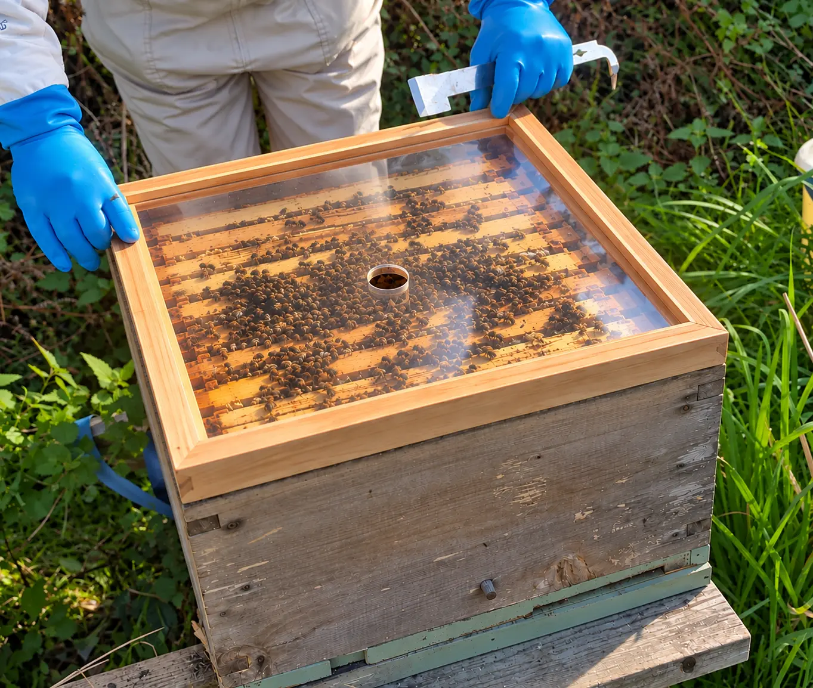
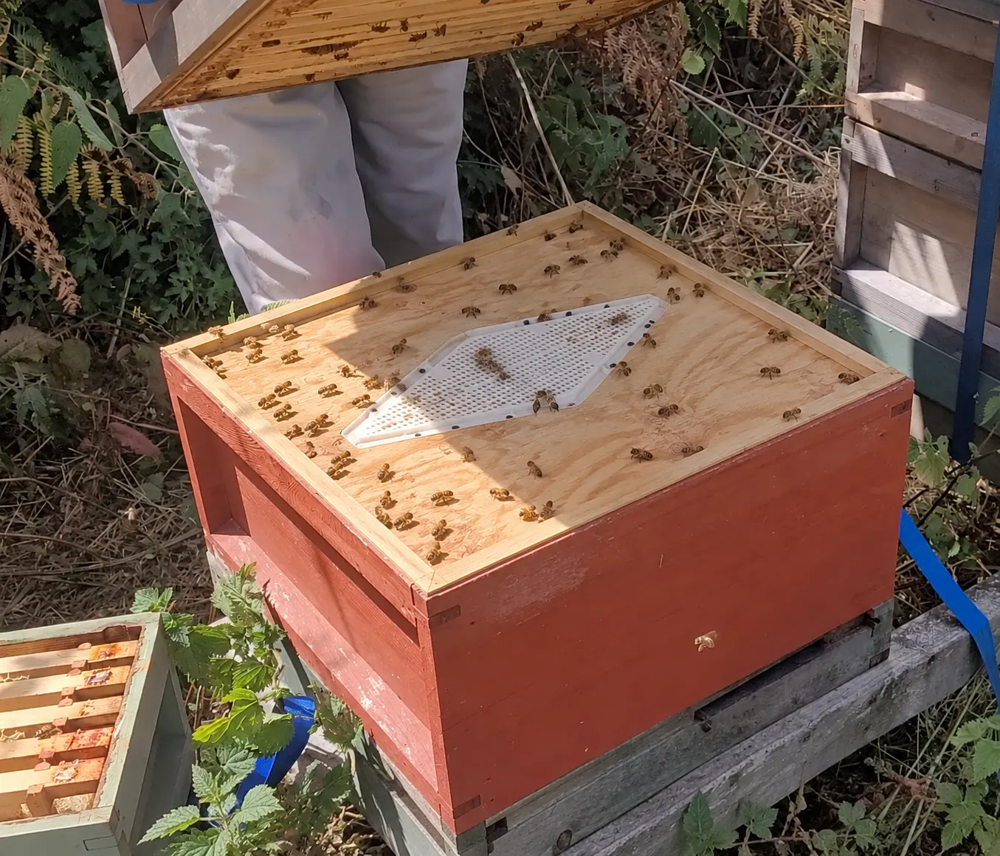
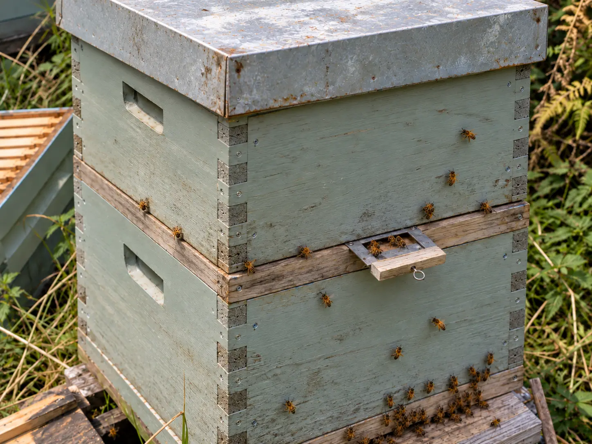

Last updated: 25 October 2026
What Is a Crown Board, and What Does It Do?
A crown board (sometimes called an inner cover) sits immediately above the brood box or top super, underneath the hive roof. It provides a cover over the bees, reduces unwanted access into the roof space and can support feeding or other management equipment.
Despite looking simple, crown boards differ considerably: some are solid, some have one feeding hole, others have two slots designed to accept Porter bee escapes, and some have transparent panels. The correct choice depends on how you manage the colony—not just the price.
A crown board does not replace a weatherproof roof. It also differs from a queen excluder, which separates the queen from the supers while allowing workers to move through.
Standard Crown Boards: Solid, Central Hole or Two Slots?
| Design | Typical use | Strengths | Points to check |
|---|---|---|---|
| Solid crown board | Everyday cover where no feeding access is needed | Simple barrier without holes to manage | Feeding may require a replacement board or suitable adapter |
| Single central hole | Access for compatible rapid or contact feeders; certain escape fittings | Convenient central access | Hole size and feeder alignment must match |
| Two-slot crown board | Can accept two Porter bee escapes or be used with appropriate feeders | Versatile for super clearing and feeding | Ensure unused slots are sealed and escapes correctly oriented |
Why are there holes, and should you leave them open?
Holes are chiefly functional access points for feeders and bee-escape fittings. They do not automatically mean that a colony needs permanent roof ventilation. An uncovered opening may let bees enter an unwanted space above the board, build brace comb, or interfere with feeding arrangements. Use the manufacturer's cover, blanking piece or suitable fitting when access is not required.
Clear Crown Boards: Perspex, Acrylic and Polycarbonate
Transparent crown boards let you look at the colony from above without removing the inner cover. That can be helpful for a brief external check or during colder weather, although it is not a substitute for assessing stores properly or conducting necessary inspections when conditions allow.
Common versions use acrylic (often described as Perspex) or polycarbonate. Scratching, propolis deposits, condensation and flexibility vary with the material and thickness. Some transparent boards have a feeding hole or Porter escape slot; others are solid.

Crown Boards Versus Clearer Boards
A clearer board is temporarily placed below honey supers before harvest to encourage workers to pass down into the brood area while making it difficult to return. Some ordinary crown boards become makeshift clearer boards once suitable Porter escapes are installed, but many beekeepers prefer purpose-built designs.
The amount of room below the escape, hive configuration, colony activity and the presence of brood in supers all affect whether the super clears successfully. Always fit exits in the direction intended by the manufacturer, avoid leaving the device in position longer than recommended, and check the supers before removing them.
How do the different bee escapes work?

Porter escapes use a restricted one-way passage, commonly with flexible spring elements. They can fit into the slots of certain crown boards but can become blocked or sticky with propolis.
Rhombus escapes typically use a larger maze-shaped exit pathway mounted under a board. Circular escapes use several directed pathways arranged in a round fitting. Canadian clearer boards use specialist one-way exits, frequently cone-based.
None is universally 'best'. Compare the manufacturer's installation requirements, the amount of clearance below the board, cleaning needs and the intended clearing period.
| Escape system | Why choose it? | Watch for |
|---|---|---|
| Porter | Compact; fits purpose-made crown-board slots | Springs may clog or stick; correct orientation is important |
| Rhombus | Larger passage system; popular on dedicated clearer boards | Needs the appropriate board and under-board space |
| Circular | Multiple exit pathways within a round fitting | Check the specific mounting and clearance instructions |
| Canadian | Specialist cone-style one-way exits | Manufacturer-specific placement and clearing time |
These are different escape mechanisms rather than simply different crown-board materials. Thorne supplies rhombus, circular and Porter variants of its Adapta Eke system, plus a separate Canadian clearer board. Check the matching eke and insert requirements before purchasing.
The Adapta Eke and Other Modular Clearer Boards
An eke is a shallow spacer or extension that creates additional headroom. Modular systems can hold a clearer-board insert and supply useful space beneath the one-way exit. In this arrangement the clearer function comes from the board and escape fitting, while the eke supplies the necessary depth.
It is important to distinguish a complete assembly from a bare insert. A listing for a clearer-board component does not always mean that every spacer, cover and fitting needed for your hive is included. Measure and check compatibility before ordering.
How to clear a super before harvesting
- Choose the clearer board and escape arrangement recommended for your hive.
- Confirm that the supers to be cleared do not contain brood that would attract nurse bees.
- Fit the board between the brood area and honey supers, with escape outlets directed downwards as instructed.
- Allow the recommended clearing period for that particular design; do not assume all escapes work on the same timetable.
- Check bee numbers, remove the supers promptly and take the clearer equipment off the hive after use.
See our guide to adding and managing honey supers for broader super management.
Specialist Swarm-Control Boards: Horsley and Snelgrove
A Horsley board is not a normal inner cover or a honey-super clearer. It is a swarm-control device that can separate areas of a colony while allowing a beekeeper to manage the movement of flying bees during a controlled manipulation.
This is not equipment to introduce casually simply because a colony has become busy. If you are learning swarm control, first understand the colony's reproductive cycle and the procedure being used.

Snelgrove boards: separating a colony and directing flying bees
A Snelgrove board is another specialist swarm-control board, but unlike the Horsley design it uses multiple small hinged entrance doors around its edges. The central opening is covered with mesh: this helps the two parts of the hive share colony odours while keeping bees physically separated. It is not a honey-super clearer board and does not replace an ordinary crown board.
The Snelgrove method places an upper brood box above a lower queenright section. The beekeeper opens and closes selected entrances in a planned sequence to redirect returning flying bees and reduce swarming pressure. The manipulation also involves management of brood and queen cells; the precise sequence depends on the method being followed.
For a wider discussion of colony management, see our swarm and queen guides.
Feeding Through a Crown Board
Many British National beekeepers feed syrup using a rapid feeder or contact feeder positioned above a suitable crown-board opening. The feed route must match the feeder's design, and a spare super or feeding eke may be needed to enclose the feeder beneath the roof.
Fondant feeding can require a different arrangement: some beekeepers place suitable fondant above a feeding hole, while others use an eke or shallow space over the cluster. What matters is safe bee access without exposing the colony to unnecessary draughts or leaving feed accessible to robbers.
Read our winter feeding guide for seasonal feeding decisions.
Winter Insulation, Condensation and Crown Board Holes
The roof, crown board, any added top insulation, floor configuration and entrance together form the hive's winter environment. There is no single ventilation-hole rule that fits every hive and every location.
Where compatible with the hive, insulation above the crown board can help keep the upper surface warmer and reduce cold-surface condensation. Ensure any material is secure, dry, appropriate for the available space and does not interfere with the roof. Clear boards may make colony observation easier, but they should not be assumed to provide the same insulating value as a deliberately insulated cover.
Condensation should be managed by considering moisture sources and the complete hive arrangement rather than automatically opening every crown-board hole. Assess stores by appropriate methods such as careful hefting when it is too cold to open the colony.
Our dummy-board and hive-divider guide explains related approaches to colony space management.
Sizes, Materials and Bee Space: Check Compatibility First
British National crown boards are commonly sold in a 460 × 460 mm external format, but rim arrangements and actual fittings differ by supplier. Other hive systems—such as Langstroth, Commercial, WBC and nucs—may use different outer dimensions or internal clearances. Always check the exact box, top/bottom bee-space design, opening dimensions and frame orientation before buying.
Traditional boards are often made from timber-framed plywood; transparent variants use acrylic or polycarbonate; and specialist clearer equipment can incorporate plastic, stainless-steel mesh, spring steel or moulded escape components.
| Material | Advantages | Limitations |
|---|---|---|
| Plywood and timber rim | Familiar, robust, easy to adapt | Moisture damage or warping if neglected |
| Clear acrylic or polycarbonate | Visual inspection without lifting the board | Can scratch, flex or collect condensation |
| Insulated/composite top | Can improve thermal performance | Fit and cleanability differ by design |
| Specialist mesh/escape fittings | Purpose-built for clearing or control | More components to install, clean and check |
For terminology and frame fit, see Beehive Frames Explained and Beehive Foundation Explained.
Which Crown Board Should a UK Beginner Buy?
For a straightforward British National setup, start with a well-made crown board that fits your hive correctly, with access holes you can reliably cover. A central-hole board is convenient if you already use compatible feeders. A two-slot board is useful if you intend to use Porter escapes. A clear crown board may be worthwhile if seeing the cluster without removing the cover matters to you.
For honey harvesting, a dedicated rhombus or other clearer-board system may make the task simpler, but it is a separate purchase and should be chosen for your hive and working method. Horsley and Snelgrove boards are specialist equipment for particular swarm-control procedures, not a beginner's default purchase.
Common Mistakes to Avoid
- Leaving unneeded crown-board holes open beneath a roof or empty super.
- Confusing a Porter-fitted crown board with a dedicated rhombus, circular or Canadian clearer assembly.
- Fitting an escape the wrong way round or allowing the exit to become blocked with propolis.
- Leaving clearer equipment on for too long rather than following model-specific guidance.
- Using a feeder that does not line up with the board's access hole.
- Assuming transparent plastic alone provides all the top insulation needed in winter.
- Buying a National-sized board without checking the hive's bee-space and rim configuration.
Frequently Asked Questions
A crown board covers the top of the hive beneath the roof. Depending on its design, it can provide feeding access and help keep bees out of unwanted spaces.
Not automatically. Openings are for feeding or specialist fittings; cover or equip unused holes according to the hive's configuration.
A crown board is the ordinary inner cover. A clearer board uses one-way bee exits to clear workers from supers before honey removal. Some designs can serve both functions.
They are normally temporary clearing fittings. Remove or cover them when not required, following the product instructions.
Not necessarily. Performance depends on its material, thickness, sealing and the overall roof and insulation arrangement.
No. It is a specialist adjustable swarm-control board used during a planned manipulation of brood and flying bees.
A Snelgrove board is used for planned swarm control. Mesh keeps two hive sections separated while small adjustable entrance doors allow the beekeeper to redirect flying bees during a timed manipulation.
Join the Conversation
Beekeeping is all about learning from one another. Follow BeezKnees for more practical UK beekeeping guides, seasonal observations and equipment explainers.
Follow the BeezKnees Facebook Page